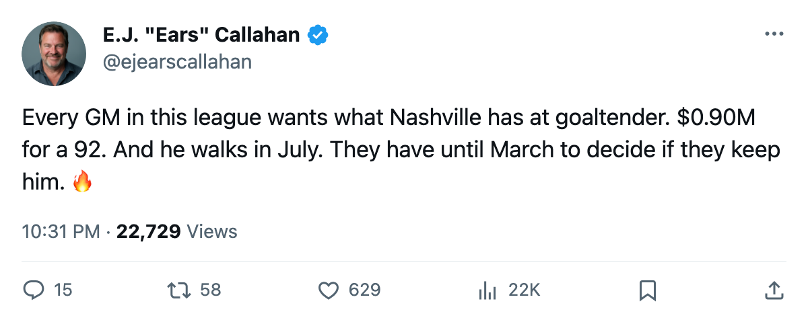
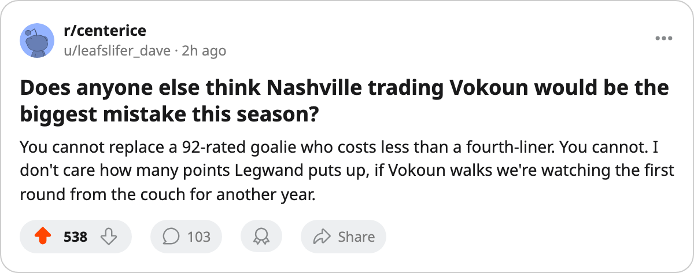

$0.90M for a 92. Nashville Reads the League's Cheapest Rate, and Their Goalie Walks in July
New Jersey just made the league's only confirmed buyer move this window. The cheapest contender in hockey has two players on expiring deals and 113 days to decide.
 E.J. "Ears" CallahanInsider · The Hot Stove
E.J. "Ears" CallahanInsider · The Hot Stove

Nashville's two expiring stars and the deadline

The  Nashville Predators payroll is $51.38M. Their point total is 30, second in the
Nashville Predators payroll is $51.38M. Their point total is 30, second in the  St. Louis Blues-led Central Division, and the arithmetic gives them $1.71M a point, the cheapest rate in the league.
St. Louis Blues-led Central Division, and the arithmetic gives them $1.71M a point, the cheapest rate in the league.
 Tomas Vokoun92 is 92 overall at $0.90M. His morale reads 97. He has played 14 games and has one year left.
Tomas Vokoun92 is 92 overall at $0.90M. His morale reads 97. He has played 14 games and has one year left.  David Legwand90 is 25, rated 90, with 31 points in 20 games at $8.37M. His morale reads 97. One year left. Neither extension has been filed. Both deals expire in July.
David Legwand90 is 25, rated 90, with 31 points in 20 games at $8.37M. His morale reads 97. One year left. Neither extension has been filed. Both deals expire in July.
New Jersey just made its move
The only CONFIRMED trade this window moved two players and two picks each direction between  New Jersey Devils and
New Jersey Devils and  Minnesota Wild. New Jersey is 12-3-1 for 29 points, second in the Atlantic. They traded for pieces they think help now and gave up picks they can absorb.
Minnesota Wild. New Jersey is 12-3-1 for 29 points, second in the Atlantic. They traded for pieces they think help now and gave up picks they can absorb.
Any GM in the league now has Nashville's number. A cheap roster with two players walking is a phone call that gets made in January.
The Vokoun replacement doesn't exist
The contract-year goaltender market has  Roberto Luongo95 at 95 and $1.60M,
Roberto Luongo95 at 95 and $1.60M,  Curtis Joseph90 at 91 and $8.00M, and
Curtis Joseph90 at 91 and $8.00M, and  Manny Legace89 at 91 and $1.20M. Luongo is the starter in
Manny Legace89 at 91 and $1.20M. Luongo is the starter in  Toronto Maple Leafs. The free-agent pool is empty.
Toronto Maple Leafs. The free-agent pool is empty.
If Nashville lets Vokoun walk, the 2006-07 season starts with a goaltender rated below 90 at the same salary, or a man above 90 at nearly nine times the cost. The payroll jumps without a matching jump in wins.
Legwand is the cleaner decision
31 points in 20 games, $8.37M, 25 years old. He signs long or the deadline brings offers from every contender that needs a center. The  Tampa Bay Lightning front office would tell you that sitting too long changes the price. The Lightning hold 4 picks, the fewest in the league besides
Tampa Bay Lightning front office would tell you that sitting too long changes the price. The Lightning hold 4 picks, the fewest in the league besides  Detroit Red Wings and Toronto Maple Leafs, and their center at 90 overall has 100 morale and no extension.
Detroit Red Wings and Toronto Maple Leafs, and their center at 90 overall has 100 morale and no extension.
Nashville holds 5 picks, all their own. They are not hoarding capital, and that means they expect to play in June. The room sits at 94.1 on the Bureau's Morale Scale, well above the 86.9 that Buffalo reads at the bottom of the league. Morale is not the issue here.

